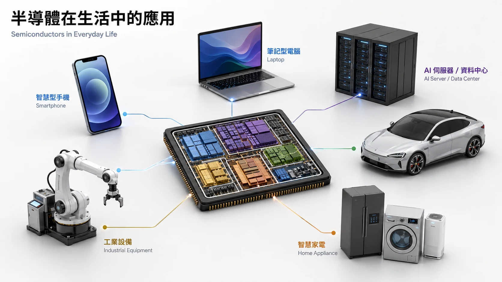

半導體看起來只是一顆小小的晶片，背後卻連結材料科學、IC 設計、精密製造、企業管理、全球供應鏈與國際政治。這份讀本不以培養半導體工程師為目的，而是先建立一張能夠看懂產業新聞、企業角色與技術變化的地圖。
認識半導體：晶片到底是什麼？
半導體（Semiconductor）原本是一類材料的名稱。它的導電能力介於導體與絕緣體之間，而且可以透過材料結構與電場控制電流。目前最常見的半導體材料是矽（Silicon）。
工程師利用矽的特性製作各種電子元件，其中最重要的基本元件之一就是電晶體（Transistor）。電晶體可以簡單理解成一個非常小的電子開關。大量電晶體按照特定方式排列與連接，就能形成具有運算、控制與資料處理能力的電路。

Wafer、Die、Chip 有什麼不同？
晶片不是一顆一顆製造。半導體工廠先準備一片圓形的晶圓（Wafer），再在晶圓表面反覆進行微影、沉積、蝕刻、離子植入等製程，一層一層建立電晶體與金屬線路。
製造完成後，晶圓被切割成很多小塊。每一塊尚未封裝的晶片稱為Die（裸晶）。Die 再經過封裝與測試，才成為可以安裝到手機、電腦或伺服器中的晶片產品。

| 名詞 | 中文 | 最簡單理解 |
|---|---|---|
| Wafer | 晶圓 | 同時製造大量晶片的平台 |
| Die | 裸晶 | 從晶圓切下、尚未封裝的晶片 |
| Chip / IC | 晶片／積體電路 | 最終具有電子功能的元件 |
| Packaging | 封裝 | 保護 Die、提供連接與散熱 |
不同晶片負責不同工作
| 類型 | 專業名稱 | 主要工作 | 常見產品 |
|---|---|---|---|
| 邏輯晶片 | Logic Chip | 計算、控制、執行指令 | CPU、GPU、NPU、SoC |
| 動態記憶體 | DRAM | 暫時保存正在使用的資料 | PC DRAM、Server DRAM、HBM |
| 快閃記憶體 | NAND Flash | 長期保存資料 | SSD、手機儲存空間 |
| 類比晶片 | Analog IC | 處理聲音、溫度、電壓等訊號 | ADC、Sensor IC |
| 電源管理晶片 | PMIC | 控制電壓與電力分配 | 手機、PC、Server |
| 功率半導體 | Power Semiconductor | 控制高電壓與電力轉換 | EV、充電設備、工業設備 |
Logic：負責「算」
CPU（Central Processing Unit，中央處理器）負責一般程式執行與系統控制；GPU（Graphics Processing Unit，圖形處理器）擅長同時進行大量相似計算，因此除了圖形運算，也大量應用於 AI；NPU（Neural Processing Unit，神經網路處理器）則針對 AI 神經網路運算最佳化。
SoC（System on a Chip，系統單晶片）不是單一功能，而是一種整合方式：CPU、GPU、通訊、影像處理與其他功能可以被整合到同一顆晶片內。

DRAM 與 NAND：工作桌與文件櫃
DRAM（Dynamic Random Access Memory，動態隨機存取記憶體）保存 CPU 或 GPU 正在使用的資料，速度快，但斷電後資料會消失，可以把它想成工作桌。
NAND Flash（NAND 快閃記憶體）負責長期保存資料，SSD、手機儲存空間與 USB 隨身碟都大量使用 NAND，可以把它想成文件櫃。
近年 AI 伺服器常見的 HBM（High Bandwidth Memory，高頻寬記憶體）也是以 DRAM 技術為基礎。HBM 的重點不只是容量，而是能不能在短時間把大量資料送給 GPU。

3nm、5nm 到底代表什麼？
3nm、5nm、7nm 稱為Process Node（製程節點）。今天的奈米名稱主要代表不同半導體製造技術世代，不能直接理解成某一個電晶體零件剛好只有 3nm。
先進製程常用於 CPU、GPU、AI Accelerator 與高階手機處理器；成熟製程則大量用於 MCU、Analog IC、PMIC、車用晶片與工業產品。最重要的觀念不是「奈米越小就一定越好」，而是產品必須在效能、功耗、成本與可靠度之間選擇適合的製程。


第一章 Takeaways
- 晶片是大量電晶體組成的電子電路。
- Wafer 是製造平台，Die 是切下來的裸晶，封裝後才成為完整晶片。
- Logic 負責運算，DRAM 負責暫時記憶，NAND 負責長期儲存。
半導體產業鏈：誰把晶片做出來？
現代半導體最大的特色之一，就是高度專業分工。一顆晶片從構想到真正進入手機或 AI Server，可能需要設計軟體公司、IP 公司、IC 設計公司、晶圓廠、設備商、材料商、封裝測試公司與系統公司共同完成。

| 產業角色 | 中文理解 | 主要工作 |
|---|---|---|
| EDA | 電子設計自動化 | 提供晶片設計、模擬與驗證工具 |
| Semiconductor IP | 半導體矽智財 | 提供可重複使用的晶片功能 |
| Fabless | IC 設計公司 | 決定晶片功能與架構 |
| Foundry | 晶圓代工 | 把 IC Design 製造成實體晶片 |
| OSAT | 封裝測試公司 | 封裝並測試晶片 |
| System Company | 系統公司 | 把晶片整合進手機、汽車、Server |
EDA：工程師設計晶片的工具
EDA（Electronic Design Automation，電子設計自動化）是一系列專門用於晶片設計與驗證的軟體。工程師會利用 EDA 進行電路設計、模擬、驗證、元件布局、金屬線連接與時序分析。代表企業包括 Synopsys、Cadence 與 Siemens EDA。
Semiconductor IP：晶片設計的積木
Semiconductor IP（半導體矽智財）是已經完成設計與驗證、可以授權給其他公司使用的晶片功能。CPU Core、DDR Interface、PCIe、USB 與 SerDes 都是常見 IP 類型。Arm 就是重要的 Semiconductor IP 公司。
IP 的價值在於，晶片公司不必每一次都從零開始設計所有功能，而可以把成熟的功能模組整合進自己的產品。
Fabless 與 Foundry：設計和製造分開
Fabless Semiconductor Company（無晶圓廠 IC 設計公司）專注晶片設計，不自己經營大型晶圓製造工廠。NVIDIA、AMD、Qualcomm、Broadcom 與 MediaTek 都是常見例子。
Foundry（晶圓代工廠）則專門替其他公司製造晶片。TSMC 是最具代表性的 Foundry。
TSMC：把 NVIDIA 的設計穩定製造成大量晶片。
| Foundry 核心能力 | 中文 | 重要性 |
|---|---|---|
| Process Technology | 製程技術 | 能使用什麼製造方式 |
| Yield | 良率 | 做出的晶片有多少可以正常使用 |
| Capacity | 產能 | 可以生產多少產品 |
| Quality | 品質 | 是否符合客戶規格 |
| Delivery | 交期 | 是否可以按時交貨 |
Equipment & Materials：晶圓廠背後的支援系統
晶圓廠並不是自己製造所有設備與材料。曝光、蝕刻、沉積、量測與檢測設備，以及 Silicon Wafer、Photoresist、Electronic Gases、High-purity Chemicals，都由外部供應鏈支援。

因此真正的晶圓製造能力更接近：
OSAT：晶圓完成後還沒有結束
OSAT（Outsourced Semiconductor Assembly and Test，委外半導體封裝與測試）負責 Assembly 封裝與 Test 測試。代表企業包括 ASE、Amkor、PTI。AI 時代，Advanced Packaging（先進封裝）更開始直接影響 GPU、HBM 與 Chiplet 之間的資料傳輸效率。
| 模式 | 主要功能 | 代表例子 |
|---|---|---|
| Fabless | IC 設計 | NVIDIA、AMD |
| Foundry | 晶圓製造 | TSMC |
| OSAT | 封裝測試 | ASE |
| IDM | 設計＋製造 | Intel、Micron、Samsung |
第二章 Takeaways
- 半導體是一條價值鏈，不是一家公司完成的產品。
- Fabless 負責設計，Foundry 負責製造。
- 晶圓廠背後還有設備與材料供應鏈。
- 封裝已從保護晶片，逐漸變成系統整合的一部分。
台灣半導體企業管理：為什麼技術好還不夠？
半導體公司真正要交付的，不只是技術，而是可以大量生產、品質穩定、準時交付的產品。這就需要管理能力。

| 指標 | 中文 | 管理意義 |
|---|---|---|
| Yield | 良率 | 有多少晶片可以正常使用 |
| Equipment Uptime | 設備可用率 | 設備能正常生產多久 |
| Capacity | 產能 | 工廠能生產多少產品 |
| Cycle Time | 生產週期 | 晶圓從投入到完成需要多久 |
| Delivery | 交期 | 能否準時交付 |
| Quality | 品質 | 是否穩定符合客戶要求 |
長期投資：今天花的錢，可能是在準備三年後
新的晶片、製程與晶圓廠往往需要提前多年投入。管理階層必須同時考量 Technology Roadmap 技術路線、Market Demand 市場需求、Capacity Planning 產能規劃與 Capital Allocation 資本配置。
Foundry 主要投入製程、工廠、設備與產能；Fabless 則主要投入晶片架構、IP、演算法與軟體。共同問題都是：今天投入什麼，才能支撐幾年後的競爭力？
Cross-functional Collaboration：跨部門合作
半導體問題通常不會只屬於一個部門。一台設備故障可能一路影響生產、產能、排程與客戶交期。

Cross-functional Collaboration（跨部門協作）真正的意思是：當問題跨越不同專業時，公司能不能快速找對人、交換資訊並做出決策。
為什麼半導體公司強調執行力？
晶圓廠設備昂貴，而且需要長時間運轉。設備停機、良率下降、排程延誤，都可能直接形成營運損失。企業因此重視 Speed 速度、Discipline 紀律、Accountability 責任與 Execution 執行。
但高強度工作也可能帶來輪班、工時與人才留任問題。真正的管理問題不是「工時越長越好」，而是如何同時維持快速執行與人才長期可持續性。
人才與知識傳承
半導體很多能力來自實務經驗。企業必須透過 Recruitment 招募、Training 培訓、Specialization 專業化與 Knowledge Transfer 知識傳承，把個人的工程經驗轉化成公司的組織能力。
Customer Responsiveness：客戶回應能力
半導體多數屬於 B2B 產業。客戶除了關心規格，也關心上市時間、品質、交期、異常處理速度與產能支援。Customer Responsiveness（客戶回應能力）就是把外部需求快速轉換成內部工程任務的能力。
第三章 Takeaways
- 半導體競爭不只有技術，還有營運能力。
- 跨部門合作是半導體公司的核心能力。
- 人才優勢的關鍵，是把個人經驗轉化成組織知識。
- 全球化後，品質與工程紀律要保留，管理方式則需要因地調整。
台灣半導體產業生態系：為什麼難以快速複製？
台灣半導體的競爭力並不只存在於少數大型企業。真正重要的是Semiconductor Ecosystem（半導體產業生態系），也就是由公司、人才、研究機構、供應商與基礎設施共同形成的產業網路。
台灣半導體如何形成？
台灣半導體早期發展可以簡化成：
從海外技術引進、工研院建立 IC 能力，到聯電與台積電成立，半導體產業並不是「買設備」就會形成，還需要人、技術、經驗與組織逐步累積。
科學園區的真正價值
新竹科學園區不只是提供土地，而是把科技企業、大學、工研院、工程人才、設備商與材料商集中在相近地區，同時提供水、電、交通、行政與基礎設施。這形成了Industrial Cluster（產業群聚）。

| 角色 | 功能 |
|---|---|
| IC Design | 設計晶片 |
| Foundry | 製造晶圓 |
| OSAT | 封裝與測試 |
| Equipment Supplier | 提供製程設備 |
| Material Supplier | 提供原料 |
| University | 培養人才 |
| Research Institute | 技術研究 |
| Infrastructure | 提供水、電、土地與交通 |
Cluster Effect：公司靠得近有什麼好處？

| 群聚效果 | 產業價值 |
|---|---|
| Talent Pool | 更容易找到工程人才 |
| Supplier Proximity | 設備與材料支援更快 |
| Knowledge Sharing | 工程資訊流動更快 |
| Shorter Logistics | 零件與材料交付更快 |
| Faster Validation | 新材料、新零件驗證加速 |
Knowledge Spillover：知識外溢
半導體很多能力屬於Tacit Knowledge（隱性知識），也就是很難完全寫進 SOP，需要透過實際操作累積的知識。人才在不同公司之間移動時，也會帶著 Engineering Experience、Quality Mindset 與 Problem-solving Method。這種現象稱為Knowledge Spillover（知識外溢）。
供應商也會共同升級
大型晶圓廠的技術要求提高後，材料商與設備商也需要改善產品，形成 Customer Requirement ↑ → Supplier Capability ↑ → Manufacturing Performance ↑ 的循環。這種Co-evolution（共同演進）使競爭力存在於整個製造網路，而不是單一晶圓廠。
為什麼「有錢蓋 Fab」還是不夠？
資本可以買到土地、建築與設備，但比較難快速買到工程人才、製程經驗、供應商網路、技術服務、研究體系與客戶信任。這就是Ecosystem Advantage（生態系優勢）。
第四章 Takeaways
- 台灣半導體是長期技術與人才累積的結果。
- 科學園區真正的價值是群聚，而不是單純提供土地。
- 供應商、人才、大學與研究機構都是競爭力的一部分。
- 複製一座晶圓廠，比複製完整生態系容易得多。
全球供應鏈與地緣政治
第四章看到產業集中可以創造效率。第五章要看另一面：當關鍵能力過度集中時，也會形成風險。
全球半導體區域分工

| 區域 | 相對重要能力 |
|---|---|
| 美國 | IC Design、EDA、IP、部分設備 |
| 台灣 | Foundry、IC Design、Packaging |
| 韓國 | DRAM、NAND、HBM |
| 日本 | Materials、Equipment |
| 歐洲 | Lithography、Automotive、Power Semiconductor |
| 中國 | 成熟製程與電子製造 |
最大的特色是：沒有任何單一國家能輕易完全掌握所有先進半導體能力。
Supply Chain Concentration：供應鏈集中
某些關鍵技術與產能高度集中在少數企業與地區。集中可以提高效率，但如果關鍵節點中斷，Supplier Disruption → Material / Equipment Shortage → Fab Impact → Chip Shortage → PC / Automotive / Server Impact，一個上游問題可能一路傳到終端產業。
為什麼半導體成為國家安全問題？
晶片廣泛應用於 AI、Data Center、Telecom、Automotive、Industrial Equipment 與 Defense，因此半導體開始同時影響 Economic Security、Technology Leadership 與 National Security。政府也開始直接參與產業補助、研發支持、出口管制、本地製造與供應鏈合作。
Export Control：出口管制
Export Control（出口管制）是政府限制特定晶片、設備、軟體或技術出口的政策工具。它控制的不只是「產品能不能賣」，更重要的是某些技術能力能不能被取得與進一步發展。
產業政策與區域化
各國開始增加 Domestic Manufacturing（本地製造）與 Regionalization（區域化）的投入。企業選擇工廠位置時，不再只看 Cost + Efficiency，還要加入 Government Policy、Customer Proximity、Supply Security 與 Geographic Risk。
Supply Chain Resilience：供應鏈韌性
Supply Chain Resilience（供應鏈韌性）指供應鏈受到衝擊後，仍可以維持運作或快速恢復的能力。常見方法包括 Second Source、Geographic Diversification、Safety Stock、Regionalization 與 Localization。

| Efficiency 效率 | Resilience 韌性 | |
|---|---|---|
| 供應商 | 集中 | 多元 |
| 生產地點 | 集中 | 分散 |
| 庫存 | 低 | 較高 |
| 成本 | 較低 | 較高 |
| 中斷風險 | 較高 | 較低 |
第五章 Takeaways
- 全球半導體是一套高度跨國分工的系統。
- 產業集中可以創造效率，也會創造風險。
- 半導體已經不只是企業競爭，也是國家政策的一部分。
- 供應鏈管理的核心，是在成本與韌性之間做選擇。
半導體企業的未來：技術、人才、ESG 與全球管理
未來半導體競爭已經不只是一場「誰能做到更小製程」的比賽。AI、高效能運算與先進封裝正在把競爭推向System-level Integration（系統級整合）。
AI 晶片是一個系統

| 技術 | 用途 |
|---|---|
| GPU / AI Accelerator | 提供運算能力 |
| HBM | 高速提供大量資料 |
| Interconnect | 晶片之間傳輸資料 |
| Advanced Packaging | 整合不同晶片 |
| Chiplet | 把大型系統拆成不同功能模組 |
| Cooling / Power | 處理散熱與供電 |
未來不能只問「GPU 多快？」還需要問：Memory、Interconnect、Packaging 能不能跟得上？
Chiplet：從一顆大晶片變成多顆功能晶片
Chiplet（小晶粒架構）把不同功能拆成多個 Die，再利用高速互連與封裝整合。Compute Die 負責計算，I/O Die 負責外部連接，Memory 負責資料儲存。不同功能甚至可以使用不同製程。

未來競爭單位可能從 One Chip 逐漸擴大成 One Semiconductor System。
人才也是產能的一部分
半導體不只是 Capital-intensive Industry，同時也是Talent-intensive Industry（人才密集產業）。IC Design、Process R&D、Equipment Engineering、Process Integration、Packaging Engineering、Software / Data、Quality / Reliability 與 Supply Chain / Operations 都是重要人才組成。
設備可以買，但成熟工程能力仍需要時間累積。
ESG 為什麼是營運問題？
ESG代表 Environmental 環境、Social 社會與 Governance 公司治理。半導體晶圓製造需要大量 Electricity、Water、Chemicals 與 Electronic Gases，所以 ESG 對半導體不只是企業形象。如果水、電或材料不足，產能就可能直接受到影響。
| ESG 議題 | 營運問題 |
|---|---|
| Energy | 是否有穩定電力 |
| Water | 是否有足夠製程用水 |
| Carbon | 如何降低能源與製程排放 |
| Chemicals | 如何安全管理高純度化學品 |
| Waste | 如何處理製程廢棄物 |
| Talent | 如何建立健康且可持續的人才制度 |
| Governance | 如何管理風險與責任 |
海外設廠不能只複製工廠
企業前往美國、日本、歐洲建立產能後，需要的不只是 Factory，還需要 Local Talent、Supplier Ecosystem、University Cooperation、Government Cooperation、Infrastructure 與 Community Relationship。真正要建立的是Local Semiconductor Ecosystem（當地半導體生態系）。
從 Chip Competition 走向 System Competition
產品層面是 Logic + Memory + Packaging + Interconnect；企業層面是 Technology + Talent + Operations；產業層面是 Suppliers + Universities + Infrastructure；全球層面則加入 Resilience + Sustainability + International Cooperation。
第六章 Takeaways
- 半導體技術正從單一晶片走向系統級整合。
- 人才是半導體產能的一部分。
- ESG 已逐漸成為實際營運問題。
- 全球化不能只複製工廠，還要建立當地生態系。
主要閱讀來源
以下依課程書單與既有章節草稿整理。本版以入門閱讀為目的，未額外擴充或重新查核書單以外的最新數據。
- McKinsey & Company. (2025). What is a semiconductor?
- ASML. The basics of microchips.
- ASML. How microchips are made.
- Semiconductor Industry Association. (2025). 2025 SIA Factbook.
- Semiconductor Industry Association. (2025). 2025 State of the U.S. Semiconductor Industry.
- PwC Taiwan.（2025）。《半導體產業趨勢報告：塑造半導體產業格局的趨勢與因素》。
- Taiwan Semiconductor Manufacturing Company. Everything to know about dedicated foundries.
- Taiwan Semiconductor Manufacturing Company. (2026). 2026 Technology Symposium highlights.
- 張忠謀（2024）。《張忠謀自傳：上冊／下冊》。天下文化。
- Miller, C.（2023）。《晶片戰爭》。天下雜誌出版。
- 太田泰彥（2022）。《半導體地緣政治學》。野人文化。
- Hijink, M.（2025）。《造光者》。天下雜誌。
- McGee, P.（2025）。《蘋果在中國》。商業周刊。
- Noor, R., et al. (2023). US microelectronics packaging ecosystem: Challenges and opportunities.